torque.js internals
(no more tweets maps from here)
a little bit of history
original problemshow deforestation in the Amazonas over time
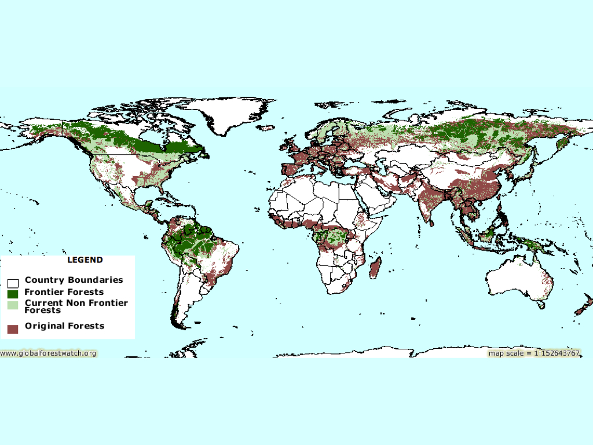
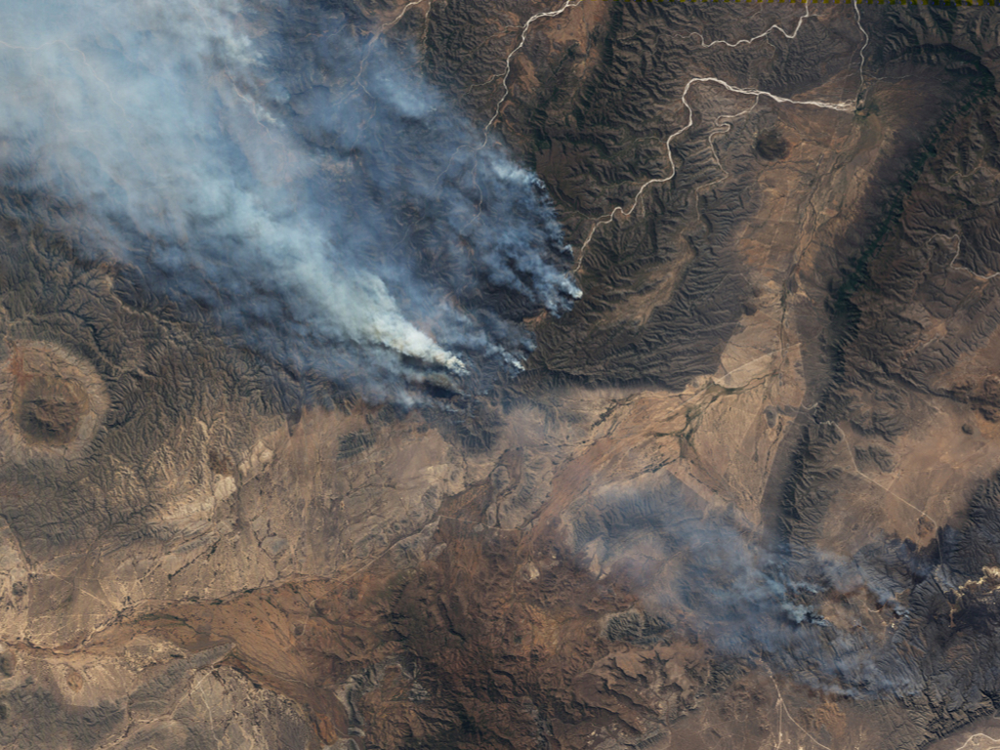
options to show animated datasets
a set of tiles per month
vector information
vector, what could go wrong ?
common pattern
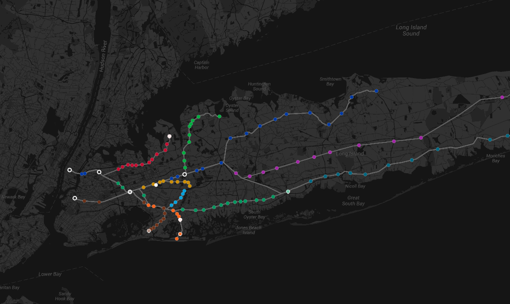
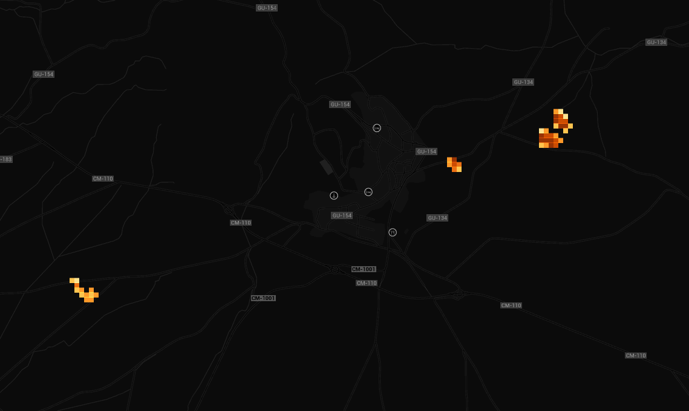
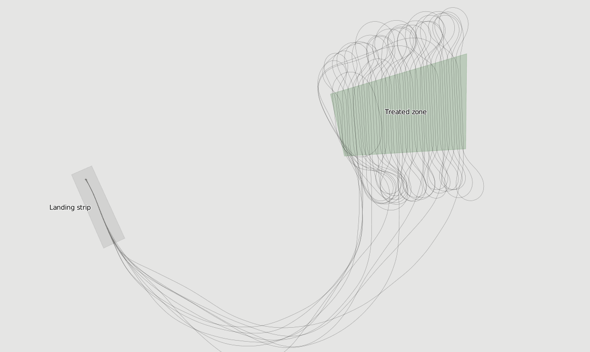
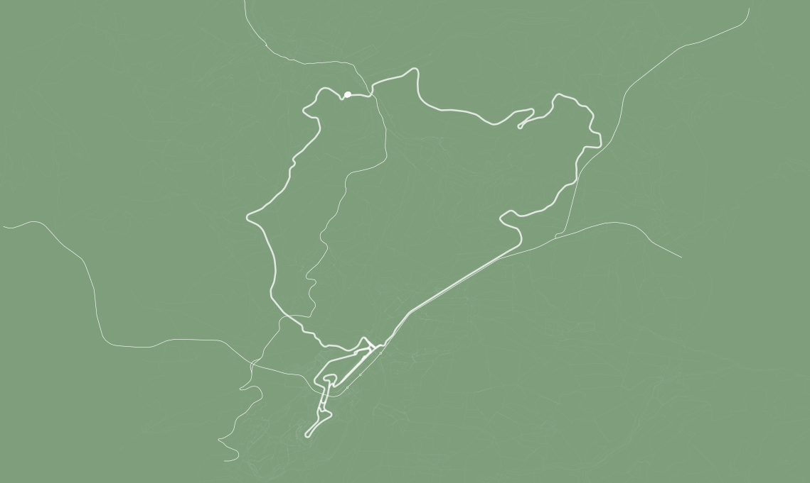
torque.js is a library that allows to render points on top of google maps or leaflet...
animated
and using CartoCSS
#layer {
marker-fill: #FEO;
line-color: #FABADA;
}
example: 1M points dataset
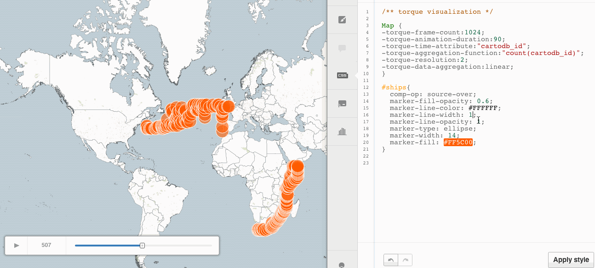
tech
- data format: tilecubes
- server side tile generation
- client side renderer
data format
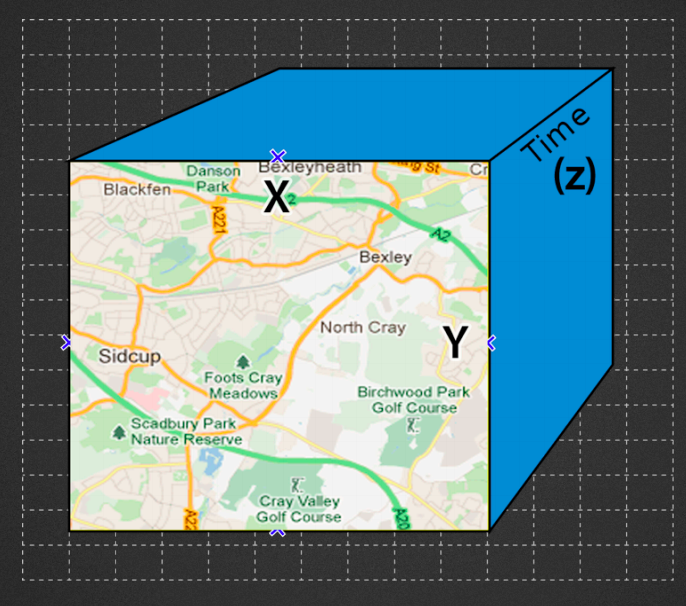
quantification and aggreation
coordinates and time
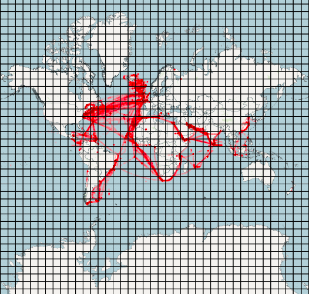
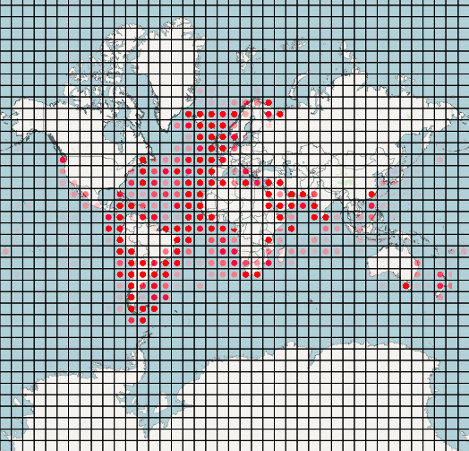
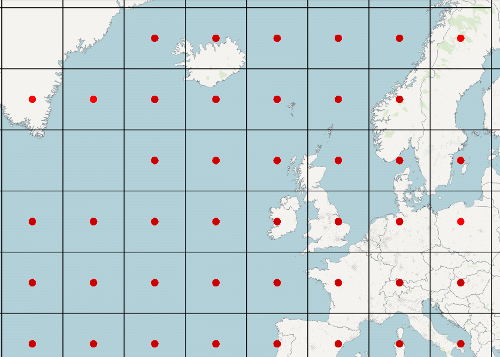
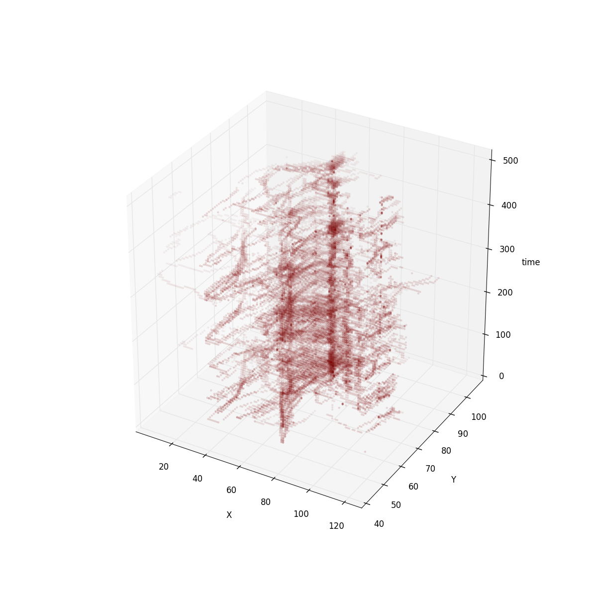
[
{
// webmercator snapped to tile pixel
x__uint8: 8,
y__uint8: 10,
// steps * floor((date - min_date)/(max_date - min_date) )
date__uint16: [0, 10, 45, 46],
// values for steps aggregated
vals__uint8: [1, 3 , 5 , 10]
},
...
]
[
{
// webmercator snapped to tile pixel
x__uint8: 8,
y__uint8: 10,
// steps * floor((date - min_date)/(max_date - min_date) )
date__uint16: [0, 10, 45, 46],
// values for steps aggregated
vals__uint8: [1, 3 , 5 , 10]
},
...
]
[
{
// webmercator snapped to tile pixel
x__uint8: 8,
y__uint8: 10,
// steps * floor((date - min_date)/(max_date - min_date) )
date__uint16: [0, 10, 45, 46],
// values for steps aggregated
vals__uint8: [1, 3 , 5 , 10]
},
...
]
[
{
// webmercator snapped to tile pixel
x__uint8: 8,
y__uint8: 10,
// steps * floor((date - min_date)/(max_date - min_date) )
date__uint16: [0, 10, 45, 46],
// values for steps aggregated
vals__uint8: [1, 3 , 5 , 10]
},
...
]
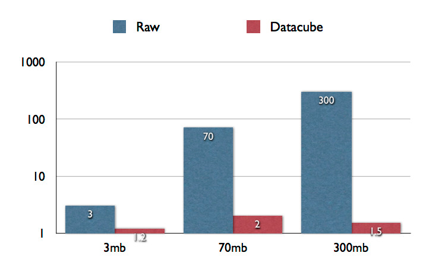
server sidenodejs + postgres
WITH
par AS (
SELECT ({xyz_resolution})*{resolution} as res
, 1.0/(({xyz_resolution})*{resolution}) as resinv
, ST_MakeEnvelope({xmin}, {ymin}, {xmax}, {ymax}, {srid}) as ext )
SELECT xx x__uint8,
yy y__uint8,
array_agg(c) vals__uint8,
array_agg(d) dates__uint16
FROM (
select
GREATEST(0, LEAST(255, round((st_x(i.{gcol}) - st_xmin(p.ext))*resinv))) as xx,
GREATEST(0, LEAST(255, round((st_y(i.{gcol}) - st_ymin(p.ext))*resinv))) as yy
, {countby} c
, floor(({column_conv} - {start})/{step}) d
FROM ({_sql}) i, par p
WHERE i.{gcol} && p.ext GROUP BY xx, yy, d
) cte, par
GROUP BY x__uint8, y__uint8;
client side
- transform tile format to render format
- cartocss2js compiler
- renderer
tile processing
tile -> TypedArrays
pixels: [x, y, x, y, x, y...]
values: [pixelIndex, value, pixelIndex, value, ....]
time_slots: [valueIndex, valueCount, valueIndex, valueCount]
pixels: [x, y, x, y, x, y...]
values: [pixelIndex, value, pixelIndex, value, ....]
time_slots: [valueIndex, valueCount, valueIndex, valueCount]
pixels: [x, y, x, y, x, y...]
values: [pixelIndex, value, pixelIndex, value, ....]
time_slots: [valueIndex, valueCount, valueIndex, valueCount]
pixels: [x, y, x, y, x, y...]
values: [pixelIndex, value, pixelIndex, value, ....]
time_slots: [valueIndex, valueCount, valueIndex, valueCount]
[
{
x__uint8: 8,
y__uint8: 10,
date__uint16: [0, 10, 45, 46],
vals__uint8: [1, 3 , 5 , 10]
},
...
]
[
{
x__uint8: 8,
y__uint8: 10,
date__uint16: [0, 10, 45, 46],
vals__uint8: [1, 3 , 5 , 10]
},
...
]
styling - cartocss2js
javascript shaders
{
'marker-width': function(ctx, value) {
return value * 0.1 * ctx.zoom;
},
'line-color': function(ctx, value) {
return ctx.zoom > 10 ? '#FFF': '#000';
}
}
#layer {
marker-width: 10;
/* shows the previous time frame */
[frame-offset = 1] {
marker-width: 5;
}
}
data, style and rendering
canvas 2D
full canvas
vs
tile canvas
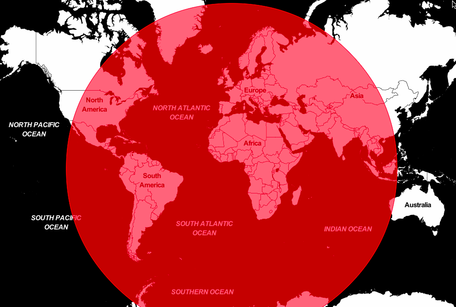
for point in points_in_slot(time) {
style = evaluateShader(point.value)
renderPoint(point.coords, style)
}
but sometimes the style is heavy
dynamic sprites everywhere
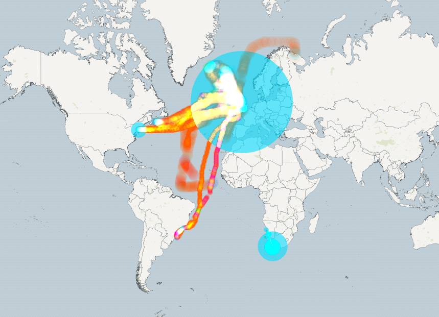
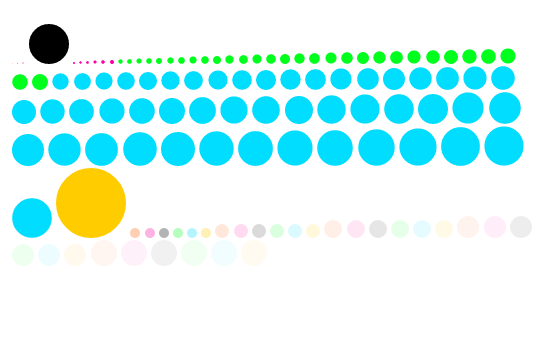
future
webgl
thanks
@javisantana
cartodb.com
(we're hiring)